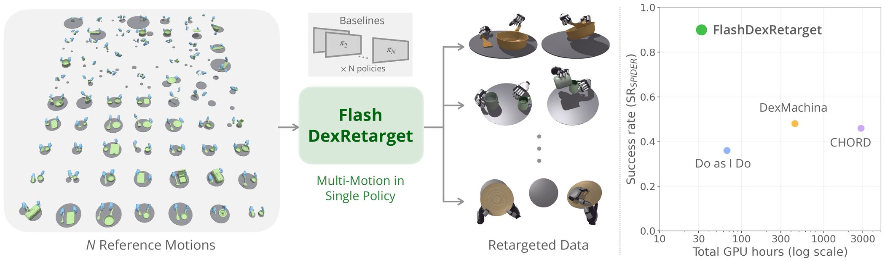
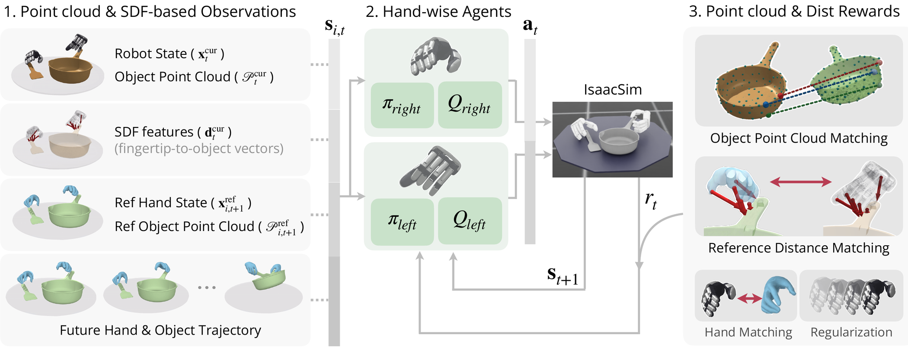
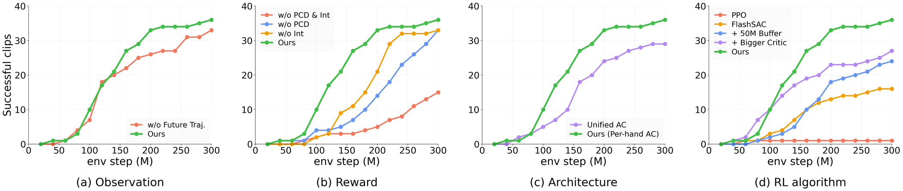
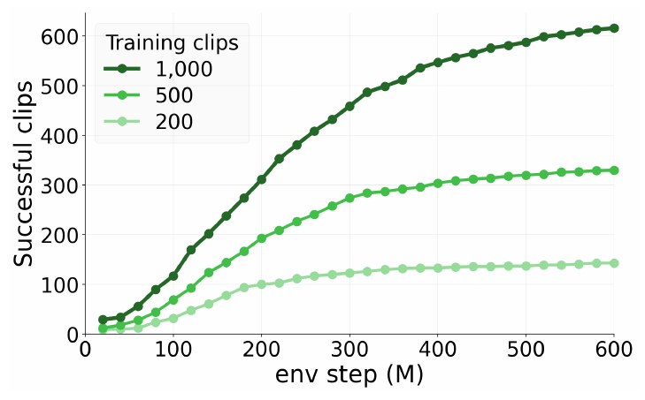

Accelerating Dexterous Manipulation Data Generation through Multi-Motion Retargeting
FlashDexRetarget turns a whole collection of human hand–object demonstrations into physically grounded robot trajectories with one reference-conditioned RL policy, instead of optimizing every demonstration separately.
Physics-based retargeting makes a human demonstration executable by a robot hand: the robot must reproduce the demonstrated object motion through its own contacts, under its own dynamics.
Existing sampling-based and RL-based retargeting methods optimize each demonstration independently, so their cost grows linearly with the number of demonstrations. FlashDexRetarget instead studies multi-reference tracking: a single reference-conditioned policy is trained jointly across all reference motions, amortizing training over the whole dataset, and every successful rollout is stored as robot data.

Reference trajectories are sampled from the dataset and assigned to parallel simulation environments. At every step the policy sees the current simulated state together with the next reference state and predicts the robot action.

One policy has to handle many objects, so it observes their shape instead of memorizing one: 128 uniformly sampled surface points for the current simulated pose and for the next reference pose, expressed in the wrist-local frame.
To describe the local hand–object relationship, including before contact, we query a signed distance field for the distance and surface normal from each fingertip and the wrist to the object, in the wrist frame.
A single next frame cannot tell where the motion is going. We encode the reference hand and object states from \(t+1\) to \(t+K\) (\(K = 10\)), relative to the current wrist frame, into a 128-d latent with a temporal encoder.
Instead of weighting translation and rotation errors by hand, we compare corresponding surface points and average the \(k = 3\) largest errors, a single metric that captures both. For a uniform reward signal across object sizes, the object-frame surface points are first rescaled to a common radius \(\rho = 0.058\) m, so that a 30° rotation yields a 3 cm error, matching the success thresholds:
with \(\sigma_{\text{obj}} = 0.1\) m.
Reconstructed contacts are noisy: fingers float above the object or sink into it, so binary contact labels are unreliable. Instead, each robot fingertip should be at least as close to the object as the human fingertip was:
with \(\sigma_{\text{int}} = 0.01\) m. A hand-tracking term and regularization complete the per-hand reward.
With one shared critic, the rewards of both hands collapse into a single scalar. Each hand therefore gets its own actor and critic, trained with its hand-specific reward. Both actors observe the full bimanual state but control only their own hand, staying physically coupled through the simulation.
Many references share one policy, so experience is too valuable to discard. We adopt the off-policy algorithm FlashSAC and scale it to the broader multi-reference state distribution.
We compare against Do as I Do, DexMachina, and CHORD on 50 reference motions (25 single-object from HOT3D and 25 two-object from TACO and OakInk2), retargeted to XHand and Sharpa Wave Hand. All methods are evaluated in IsaacSim on NVIDIA RTX 3090 GPUs. Each single-reference run stops once a successful rollout is found, and GPU-hours are summed over all motions, including the full cost of unsuccessful runs; FlashDexRetarget trains one policy for 300M environment steps.
| Method | Motion | SRSPIDER ↑ | SRMT-Obj ↑ | SRMT ↑ | MOPE (mm) ↓ | MORE (rad) ↓ | GPU-h ↓ |
|---|---|---|---|---|---|---|---|
| (a) XHand | |||||||
| Do as I Do | Single | 0.36 | 0.04 | 0.00 | 47.32 | 0.28 | 66 |
| DexMachina | Single | 0.48 | 0.32 | 0.12 | 37.49 | 0.29 | 447 |
| CHORD | Single | 0.46 | 0.02 | 0.00 | 55.70 | 0.16 | 2,847 |
| FlashDexRetarget† | Multi | 0.90 | 0.86 | 0.86 | 10.95 | 0.25 | 32 |
| (b) Sharpa Wave Hand | |||||||
| Do as I Do | Single | 0.64 | 0.10 | 0.10 | 58.33 | 0.24 | 62 |
| CHORD | Single | 0.50 | 0.22 | 0.00 | 60.07 | 0.19 | 3,314 |
| FlashDexRetarget | Multi | 0.72 | 0.60 | 0.60 | 17.28 | 0.29 | 36 |
SRSPIDER: object position / rotation error within 10 cm / 0.5 rad, averaged over the objects of the active hands.
SRMT-Obj: object within 3 cm / 30°. SRMT: additionally fingertip and hand-joint position
errors within 6 cm and 8 cm. MOPE / MORE: mean object position / rotation error over trajectories that satisfy SRSPIDER.
†Uses object-size normalization in the point-cloud matching reward. It is applied only to the XHand
result; the Sharpa Wave Hand, ablation, and scaling results do not yet use it.


When one shared policy is trained on collections of 200, 500, and 1,000 motions (600M environment steps each), larger collections yield more successfully retargeted motions within the same environment-interaction budget.
Sharing training across more references therefore increases the data-generation yield of a single training run: more demonstrations in, more robot data out.
We retarget real-world-captured human demonstrations and replay the successful simulated trajectories on a robot arm with an XHand. This checks that the retargeted motions remain executable under real contact dynamics; it is not a closed-loop deployed policy.
@misc{lee2026flashdexretarget,
title = {FlashDexRetarget: Accelerating Dexterous Manipulation Data Generation through Multi-Motion Retargeting},
author = {Lee, Kyungmin and Kim, Sibeen and Hwang, Dongyoon and Oh, Yoonsang and Kim, Donghu and
Lee, Youngdo and Nahrendra, I Made Aswin and Choo, Jaegul and Lee, Hojoon},
year = {2026}
}